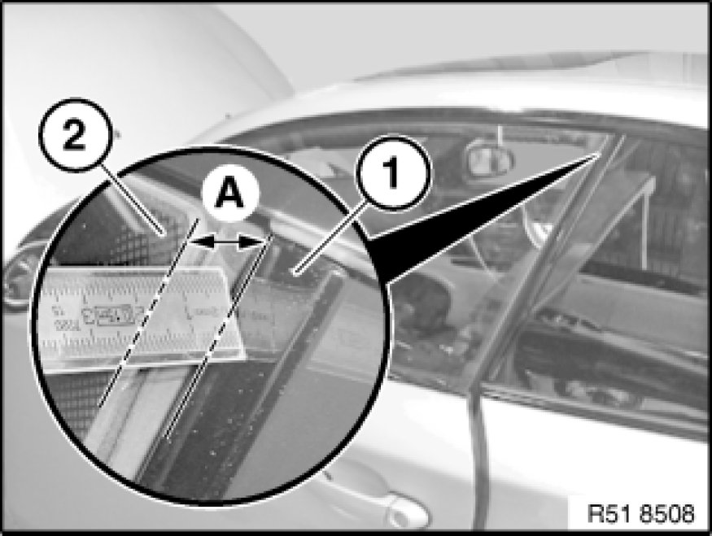
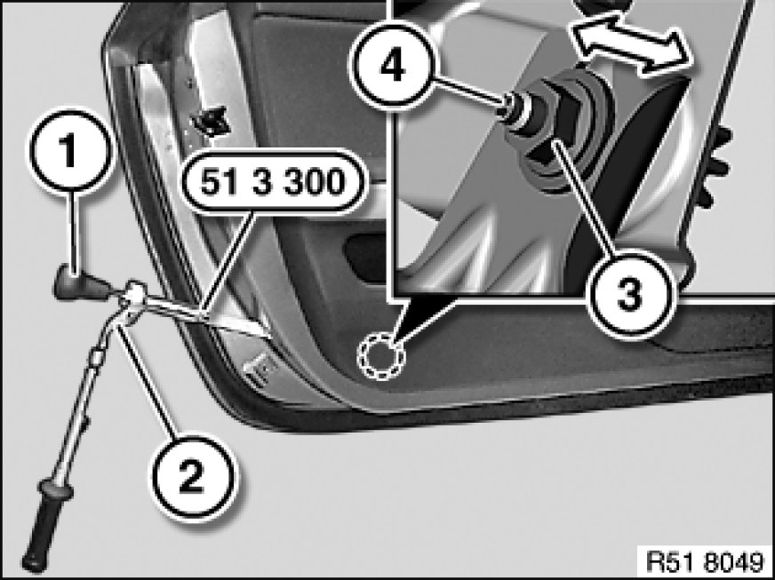
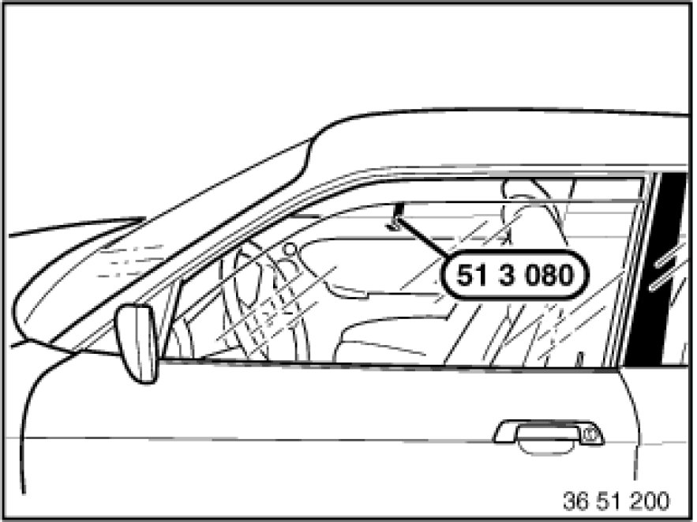
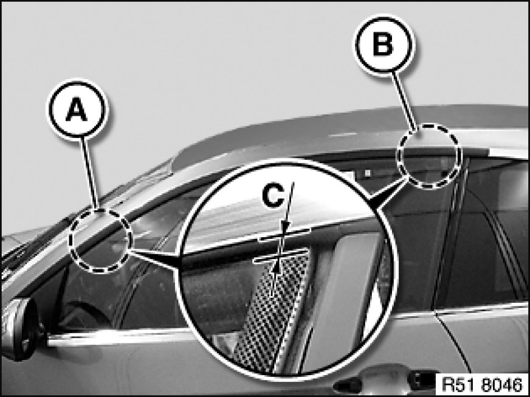
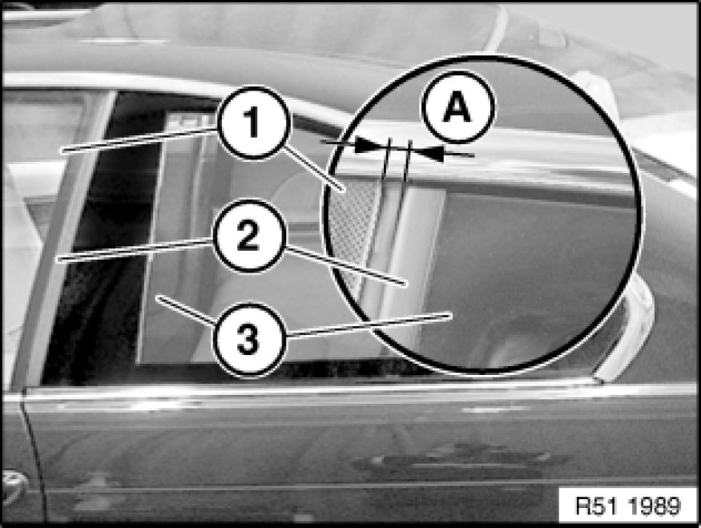

Front Door Window Glass: Adjustments
51 32 154 - Adjusting left or right front door window glass

Special tools required:

Prerequisite:
- Car must stand on its wheels
- Front door correct adjusted to fit Adjustments
Necessary preliminary tasks:
- Delete power window normalization (denormalize) Testing and Inspection

Ideal adjustment, pretension:
Note:
Check pretension only when window cavity cover strip is fitted.
Manually close rotary latch of door lock and carefully bring door into contact with lock striker.
Measure gap (A) between trim (1) and outside edge of door window glass (2).
Note:
Measuring point 10 mm below top edge of window glass.
A = 10 mm

Adjusting pretension:
Note:
Positioning aid on special tool not valid for E81.
Slacken nut (3) with reversible ratchet (2) of special tool 51 3 300 (consisting of 51 3 301, 51 3 303 and 51 3 304).
Turn knob (1) on special tool 51 3 300 to turn stud (4) and thereby alter pretension.
Tighten nut (3).
Tightening torque 51 33 1AZ 51 33 Power Windows, Front.
Check adjustment, repeat procedure if necessary.

Ideal adjustment, retraction depth:
- Open front door
- Attach special tool 51 3 080 to door window glass
- Carefully close front door and door window
- Measure retraction depth
Note:
2 items of special tool 51 3 080 are required for rapid adjustment of retraction depths.

Measure retraction depth (C) in areas (A and B).
Retraction depth (C):
A = - 3.0 ± 0.5 mm
Gap between measuring point and triangular mirror section = 30 mm
B = - 4.0 ± 0.5 mm
Gap between measuring point and window edge = 30 mm
Important!
Front door must open and close without the door window glass touching the roof trim strip.

Ideal adjustment, longitudinal direction:
Note:
Adjustment of retraction depth and longitudinal direction must be performed in a single operation.
Door window glass (1) must be positioned at measurement (A) and parallel to trim (2).
Measurement (A) = 7 ± 0.5 mm -

Adjusting retraction depth/longitudinal direction:
Remove outer window cavity cover strip 51 21 300 Removing and Installing/Replacing Window Cavity Cover Strip on Outside of Left or Right Front Door.
Fit special tool 51 3 240 on door window glass.
Slacken screw (1) with special tool 51 3 240.
Slide door window glass into position (see ideal adjustment).
Tightening torque 51 32 1AZ 51 32 Front Door Windows.
Check adjustment, repeat procedure if necessary.
Note:
After completing adjustment work, it is essential to normalize Testing and Inspection the power window unit.